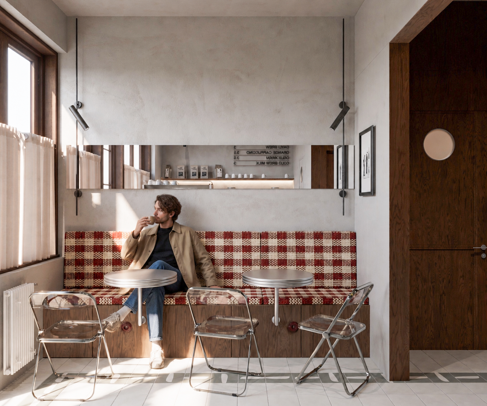
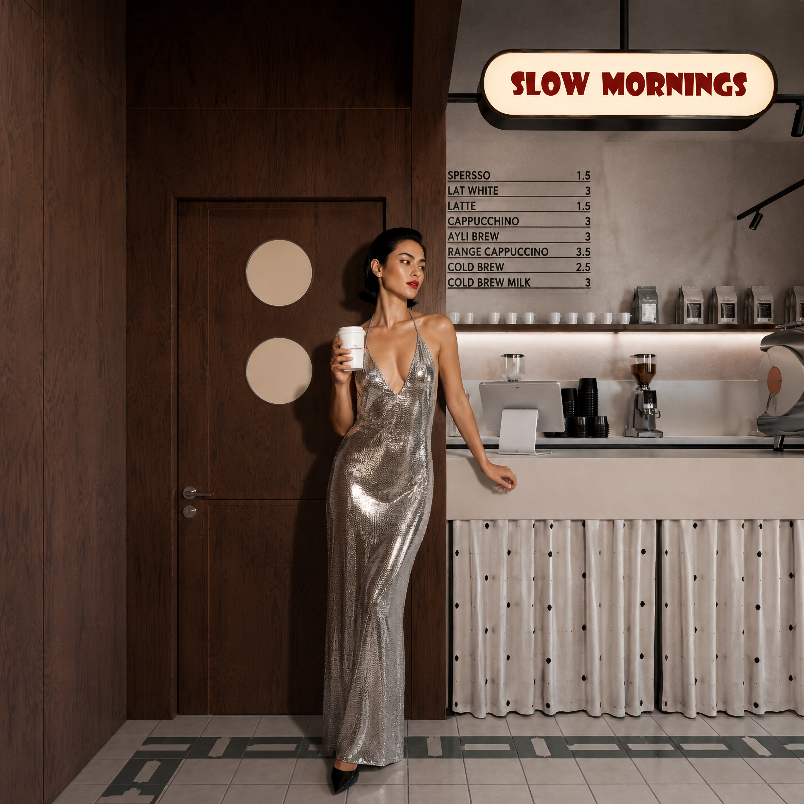
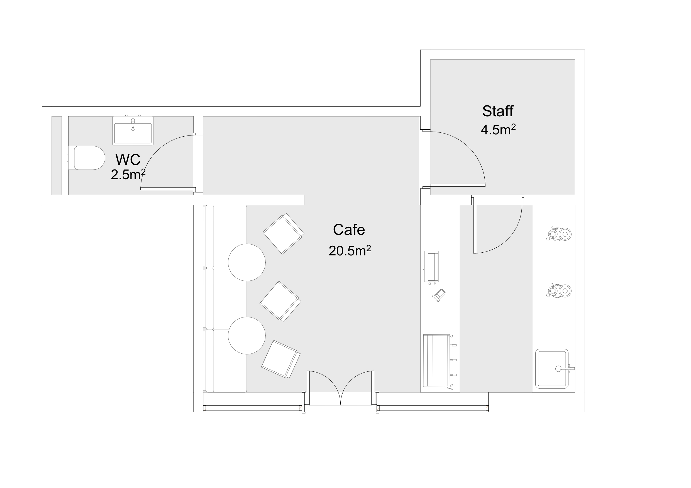
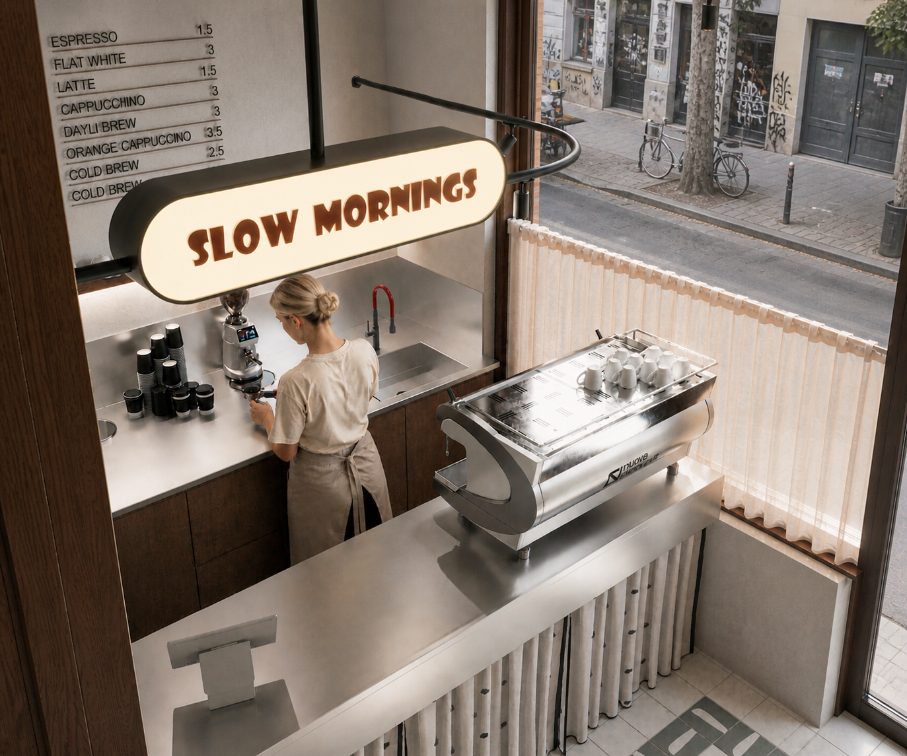
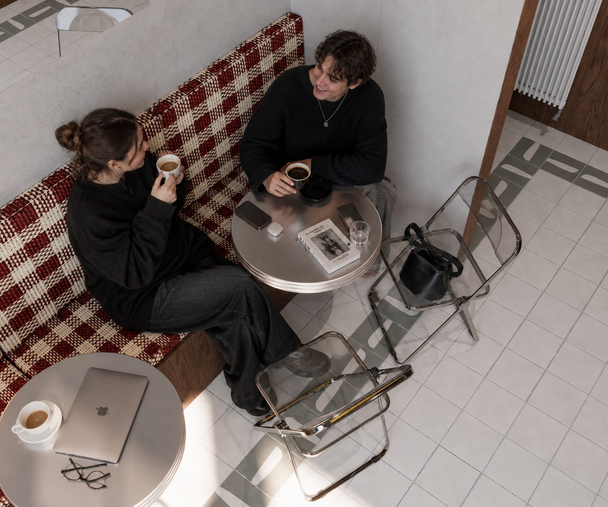
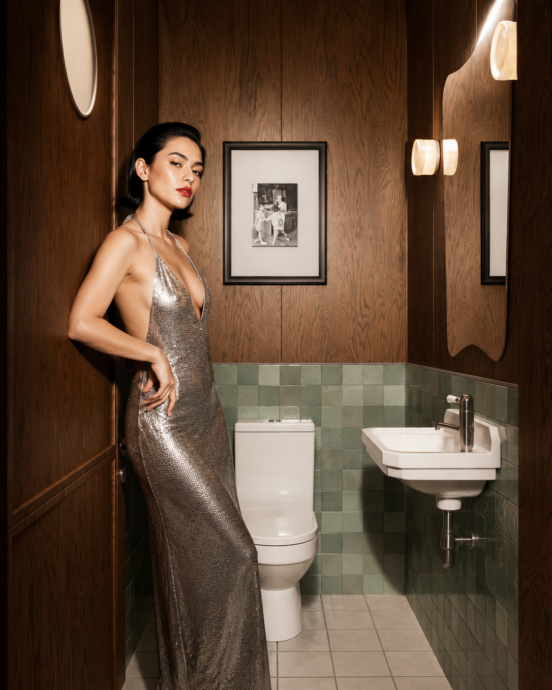
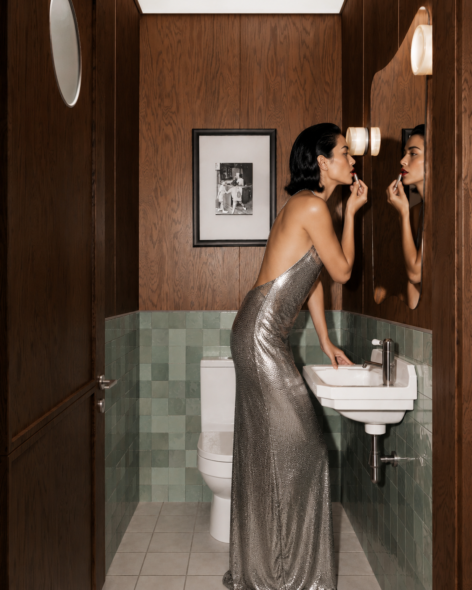

Coffee Shop / Concept / Layout / Visualization
Slow Mornings
- Year
- 2026
- Location
- Tbilisi, Georgia
- Scope
- Concept / Layout / Visualization
Slow Mornings is a contemporary cafe interior inspired by the comfort of unhurried mornings. Natural materials, warm tones, and soft lighting come together to create a welcoming space designed for relaxation, connection, and everyday rituals.





